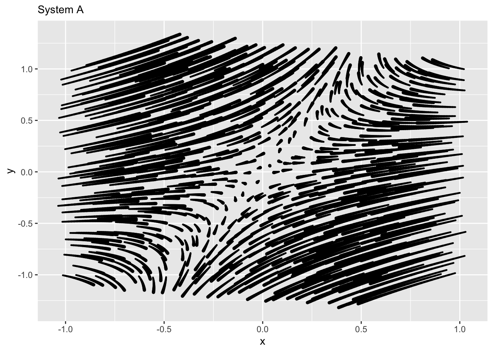
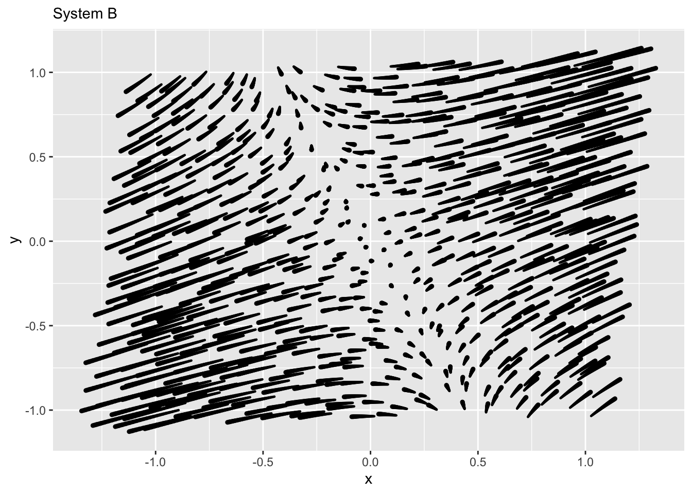
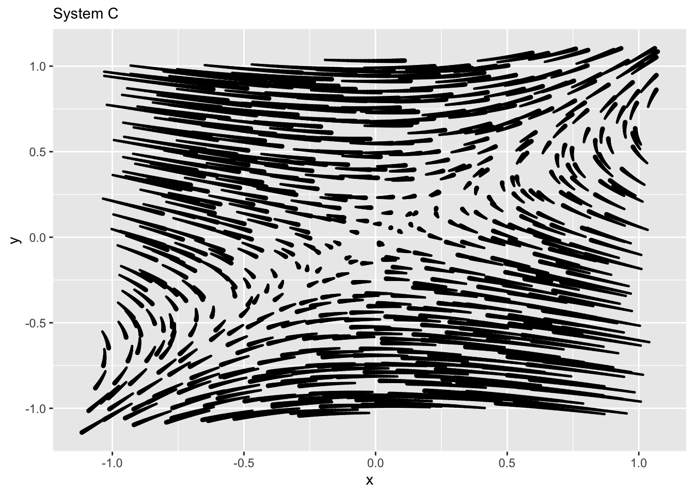

Chap 45 Exercises
\[ \newcommand{\dnorm}{\text{dnorm}} \newcommand{\pnorm}{\text{pnorm}} \newcommand{\recip}{\text{recip}} \]
Exercise 1 The exercise is based on the interactive applet shown below. Click on the image to open up the applet in another tab of your browser. Then arrange so that the applet’s tab is side by side with this one. That way you can see the questions and figure out the answer at the same time.
We will look at trajectories that go round and round: oscillating solutions to the linear dynamics around a fixed point.
In the applet, click on the left-hand graph to set the \(a\) and \(b\) values in the [ab10] matrix. Clicking on the right-hand graph will start a trajectory (shown in red) from the place where you click.
You can create an oscillatory flow by clicking anywhere in the blue parabolic region in the left-hand graph. Play around with clicking in different spots in the parabolic region. Set the number of time steps for the red trajectory until you can see at least two full revolutions around the origin.
- Click near (but not on) the fixed point. Which of these best describes the shape of the trajectory?
A tightly wound spiral
A loosely wound spiral
A rectangular shape
Alternating between heading toward the fixed point and heading away from it.
question id: child-buy-drawer-1
- Leaving the a and b values the same as when you answered the previous question, start the trajectory about half-way from the fixed point. How does the new trajectory compare to the one from the previous problem?
A more tightly wound spiral
A more loosely wound spiral
A spiral that goes the other way round
A rectangular shape
question id: child-buy-drawer-2
- Find some \(a\) and \(b\) that causes the trajectory to go round in a closed loop. (You might not be able to get it to close it exactly, but try the best you can.) Vary \(a\) leaving \(b\) alone, and vice versa, so you can see how the existence of the closed loop depends on \(a\) and \(b\). Which of these best describes the requirement for a closed loop?
b is close to zero
a is close to zero
both a and b are close to zero
a is bigger than b
question id: child-buy-drawer-3
- Drawing on your experience from the previous question in vary ing \(a\) and \(b\), which of these best describes the requirement for a trajectory that spirals out from the origin?
\(a < 0\)
\(0 < a\)
\(b < 0\)
\(0 < b\)
question id: child-buy-drawer-4
- Drawing on your experience from the previous question in varying \(a\) and \(b\), which of these best describes the requirement for a trajectory that spirals in toward the origin?
\(a < 0\)
\(0 < a\)
\(b < 0\)
\(0 < b\)
question id: child-buy-drawer-5
- Now you should be pretty good at navigating the a-b space to make differently-shaped round-and-round trajectories. Focus for the moment on whether the spirals head in to the fixed point (stable) or away from it (unstable). What is the relationship between the eigenvalues and whether the trajectory is stable or not?
real part is negative for stable flow
real part is positive for stable flow
imaginary part is negative for stable flow
imaginary part is positive for stable flow
question id: child-buy-drawer-6
- Explore close to the edges of the parabolic zone in a-b space. What happens to the trajectories compared to when a-b is in the middle of the parabolic zone?
the speed of rotation slows down
the speed of rotation is unchanged
the speed of rotation increases
question id: child-buy-drawer-7
- Look at the eigenvalues when you move around the a-b space. What aspect of the eigenvalues corresponds to the speed of revolution?
the magnitude of the imaginary part
the magnitude of the real part
whether the imaginary part is positive or negative
whether the real part is positive or negative.
question id: child-buy-drawer-8
Exercise 2
- What are the numerical values of the eigenvalues of the matrix \(\left[\begin{array}{rc}-1 & \frac{3}{4} \\ 1 & 0\end{array}\right]\)?
\(\frac{1}{2}\) and \(-\frac{3}{2}\)
\(\frac{1}{2}\) and \(-\frac{5}{2}\)
\(\frac{1}{2}\) and \(+\frac{5}{2}\)
\(-\frac{1}{2}\) and \(-\frac{5}{2}\)
question id: char1-1
- What are the numerical values of the eigenvalues of the matrix \(\left[\begin{array}{rc}0 & \frac{1}{2} \\ 1 & 0\end{array}\right]\)?
\(\pm\sqrt{2}/2\)
\(\pm\sqrt{2}\)
\(\pm 2\)
\(\pm\frac{1}{2}\)
question id: char1-2
Eigenvalues are important because they dramatically simplify the interpretation of matrices and of dynamical system behavior near fixed points.
Eigenvalues are numbers. To use the language of linear combinations, an eigenvalue is a scalar. As you know, when you multiply a vector times a scalar, the result has the same direction (or the exact opposite direction) but might be longer or shorter. Like this: \[ 3 \left[\begin{array}{c}1\\2 \end{array}\right] = \left[\begin{array}{c}3\\6 \end{array}\right]\ \ \ \ \text{or}\ \ \ \ \ -4 \left[\begin{array}{r}3\\-1 \end{array}\right] = \left[\begin{array}{r}-12\\4\end{array}\right]\] In contrast, matrix multiplication of a vector can generate a result that has a different direction than the original vector, like this:
\[\left[\begin{array}{rc}0 & \frac{1}{2} \\ 1 & 0\end{array}\right]\cdot \left[\begin{array}{c}2 \\ 1\end{array}\right] = \left[\begin{array}{c}\frac{1}{2} \\2\end{array}\right]\ \ \ \ \text{or}\ \ \ \ \left[\begin{array}{rc}-1 & \frac{3}{4} \\ 1 & 0\end{array}\right]\cdot \left[\begin{array}{r}1 \\ -4\end{array}\right] = \left[\begin{array}{c}4 \\1\end{array}\right]\]
An eigenvector is a vector has a seemingly magical property with respect to multiplication by the matrix it characterizes: the result of the multiplication is a vector that has the same direction as the original but scaled by it is corresponding eigenvalue \(\lambda\). That is, if \(\lambda\) is an eigenvalue of \({\mathbf M}\) and \({\mathbf \Lambda}\) is the corresponding eigenvector: \[{\mathbf M}\cdot {\mathbf \Lambda} = \lambda {\mathbf \Lambda}\]
- Which of these is an eigenvector of the matrix \(\left[\begin{array}{rc}-1 & \frac{3}{4} \\ 1 & 0\end{array}\right]\)? (Hint: Multiply the matrix by each of the vectors listed. For one of them, the result of the multiplication will be aligned with the vector used. You can use the constant of proportionality to answer the next question, but you will have to start by choosing the right one of the options that follow.)
\(\left[\begin{array}{r}-3\\2\end{array}\right]\)
\(\left[\begin{array}{r}3\\2\end{array}\right]\)
\(\left[\begin{array}{r}-2\\3\end{array}\right]\)
\(\left[\begin{array}{r}2\\3\end{array}\right]\)
question id: char1-3
- What is the eigenvalue associated with the correct answer from the previous problem?
-1.5 -1 -0.5 0.5 1.5
question id: char1-4
- Consider the two matrices \[{\mathbf M}_1 = \left[\begin{array}{rr}5 & 6 \\0 & 1\end{array}\right]\ \ \text{and}\ \ \left[\begin{array}{rr}-3 & 1 \\0 & 1\end{array}\right]\] Which of the following is not an eigenvector of \({\mathbf M}_1\) or of \({\mathbf M}_2\)? (We’ve rounded off to two decimal places and provided a sandbox for calculations.)
\(\left[\begin{array}{r}6\\1\end{array}\right]\)
\(\left[\begin{array}{r}-1\\1\end{array}\right]\)
\(\left[\begin{array}{r}3\\2\end{array}\right]\)
\(\left[\begin{array}{r}3.02\\10\end{array}\right]\)
\(\left[\begin{array}{r}3.30\\-1\end{array}\right]\)
question id: char1-5
You can use the sandbox below either for arithmetic calculations that you hand write or to use matrix-related R commands. In the initial code in the sandbox is a test that shows whether a vector v is an eigenvector of M. In this example it is and has eigenvalue 0.5615 (rounding off to 4 decimal places). You can print out M or v in the ordinary way, with the simple commands M or v respectively.
Exercise 3 We will work with the linear dynamical system
\[\begin{eqnarray} \partial_t x & = -x\\ \partial_t y & = -11 x - 2 y\ .\\ \end{eqnarray}\]
Using integrateODE() find the solution \(x(t)\) for \(0 \leq t \leq 10\) for each of these three initial conditions:
Trajectory 1) \(x_0=1, y_0=-1\)
Trajectory 2) \(x_0=0, y_0=1\)
Trajectory 3) \(x_0=1, y_0=0\)
The three solutions will be the functions T1$x(), T2$x(), and T3$x().
Since the dynamics are linear, there will be a simple relationship between the three solutions, just as there is a simple relationship between three vectors in a 2-dimensional vector space.
Find this simple relationship and make a graph that demonstrate it.
Exercise 4 The only fixed point of the rabbit-fox system is \(\left(r^\star, f^\star\right) = \left(\frac{\alpha}{\beta}, -\frac{\delta}{\gamma}\right)\)
The linearized dynamics around this fixed point are: \[\partial_t r = \left(\alpha + \frac{\beta\gamma}{\delta}\right) [r - r^\star] + \alpha [f - f^\star]\\ \partial_t f = - \delta [r - r^\star] + \left(\delta + \frac{\alpha\beta}{\delta}\right) [f - f^\star]\]
Using the formula for eigenvalues, calculate the eigenvalues symbolically and report on the stability of the fixed point.
Exercise 5 In this exercise, you will be using an app that allows you to set \(a\) and \(b\) in the [ab10] matrix and hunt for eigenvectors.
Open up the app in another browser tab and arrange it side-by-side with this document, so you can see both at the same time.
You used a somewhat similar app when exploring linear, two-dimensional finite-difference equations. Here’s a link, but you don’t need to open that app for this exercise.
This new app does a few things differently:
- In the old app, you had four number-entry boxes to set the values of the [abcd] matrix. Here, because we are using the [ab10] format, you need only set \(a\) and \(b\). You can do this by clicking within the left-hand graph.
- The a-b selector graph is annotated with the type of generic behavior that the differential-equation system will show for any combination of \(a\) and \(b\). This allows you to reason backward from the behavior you are interested in to the corresponding values of \(a\) and \(b\). Since the type of behavior is encoded in the eigenvalues, you are effectively inverting the eigenvalue formula to find \(a\) and \(b\).
- The flow field (right-hand graph) shows stream-lines of continuous-time motion. Imagine you had a bunch of glitter which you cast out over a pool of water with a given flow pattern. If you took a time-exposure photo, you would see each piece of glitter as it moved along with the water in which it is embedded.
- You can click in the flow field to start a trajectory at that point. You can control the time domain—that is, how long is the time exposure of the photo—with the radio buttons at the bottom.
- There is a thin, green line annotating the flow field. This line runs from the fixed point (right in the center) in the direction of the point on which you click to start a trajectory. A vector with the same orientation as the green line is given numerically below the graph. This orientation is also described using an angle measurement in degrees.
- There is no display of the solution, that is, \(x()\) versus \(t\). This is because we want you to understand the geometry of the flow.
First, play around with the app. Choose miscellaneous values of \(a\) and \(b\), observe the flow, and click in the flow field to draw a red trajectory. Notice what happens when you make the number of steps larger or smaller. In unstable directions, you can get a good view of the trajectory by starting it near the fixed point. If you start it at the periphery of the graph, most of the trajectory will be outside the display. And if the number of steps is very small, you may not see it at all because the glyph is so thin near the start.
When coming from a stable direction, click near the periphery of the graph to get a good view, since the red trajectory will naturally be heading in towards the origin. When estimating the orientation of an eigenvector, try to get the green line heading straight down the middle of the red trajectory. This often requires a bit of fiddling, moving the starting point just a tiny amount to find one that is just right.
When you are on an eigenvector, the trajectory will be dead straight on the green line. Any trajectory not starting on an eigenvector will be curved to a greater or lesser extent, depending on the relative sizes of the eigenvalues.
In the following questions, pick the choice closest to the answer you found. The exact choice of \(a\) and \(b\) stemming from a click depends somewhat on the graphics resolution of your display, so you should expect only to be able to get close to the \(a\) and \(b\) values given in the question.
- Set \(a=-1.0\) and \(b = 0.5\) (or as close as you can get) and observe the flow. This is a saddle: stable in one direction, unstable in another. There will be one stable eigenvector, where the flow moves directly outward from the origin, and one unstable eigenvector, where the flow moves directly inward toward the origin. Which one of these is the orientation (in degrees) of the unstable eigenvector?
-149.7
-63.6
-31.7
69.1
73.5
106.6
143.7
149
question id: panda-teach-door-1
- Which of these best describes the eigenvalue corresponding to the unstable eigenvector?
Negative and real
Zero and real
Positive and real
Complex with a negative real part
Complex with a positive real part
question id: panda-teach-door-2
- Keeping \(a=-1.0\) and \(b = 0.5\), hunt for the stable eigenvector. Which one of these is the orientation (in degrees) of the stable eigenvector?
-149.7
-63.6
-31.7
69.1
73.5
106.6
143.7
149
question id: panda-teach-door-3
- Set \(a=2\) and \(b = -0.5\) and observe the flow. This is a source: all initial conditions lead to motion away from the fixed point. But for this \(a\) and \(b\), some directions are “faster” than others. Which one of these is the orientation (in degrees) of the fast eigenvector?
-149.7
-63.6
-31.7
69.1
73.5
106.6
143.7
149
question id: panda-teach-door-4
- Keeping \(a=2\) and \(b = -0.5\), what is the orientation of the slow eigenvector?
-149.7
-63.6
-31.7
69.1
73.5
106.6
143.7
149
question id: panda-teach-door-5
- Staying with the flow from \(a=2\) and \(b = -0.5\), which of these best describes the pair of eigenvalues?
Both are real and positive
Both are real and negative
One is complex, the other real
Both are complex, one has negative real part
question id: panda-teach-door-6
- Set \(a=-2\) and \(b = -0.5\) and observe the flow. This is a sink: all initial conditions lead to motion toward the fixed point. Which one of these is the orientation (in degrees) of the fast eigenvector?
-149.7
-63.6
-31.7
69.1
73.5
106.6
143.7
149.0
question id: panda-teach-door-7
- Keeping \(a=-2\) and \(b = -0.5\), what is the orientation of the slow eigenvector?
-149.7
-63.6
-31.7
69.1
73.5
106.6
143.7
149
question id: panda-teach-door-8
- Staying with the flow from \(a=2\) and \(b = -0.5\), which of these best describes the pair of eigenvalues?
Both are real and positive
Both are real and negative
One is complex, the other real
Both are complex, one has negative real part
Both are complex, both have negative real part
question id: panda-teach-door-9
- Set \(a=-1\) and \(b = -1\) and observe the flow. This is a node: the flow is spiral with the fixed point at the center. Is the flow stable or unstable?
stable
unstable
neither stable nor unstable
question id: panda-teach-door-10
- Keeping \(a=-1\) and \(b = -1\), what can you correctly say about the eigenvectors?
They have almost the same orientation
There is only one eigenvector
There are no eigenvectors
question id: panda-teach-door-11
- Staying with the flow from \(a=2\) and \(b = -0.5\), which of these best describes the pair of eigenvalues?
Both are real and positive
Both are real and negative
One is complex, the other real
Both are complex, one has negative real part
Both are complex, both have negative real part
question id: panda-teach-door-12
- Set \(a=0\) and some \(b < 0\). The result will be a trajectory that goes around in a closed loop. (You will want to make the number of steps large to see a complete loop.) You may not be able to click on exactly \(a=0\), but you should be able to get close enough that the trajectory is a very tightly wound spiral. We are interested here in how many cycles the trajectory covers in a fixed number of time steps, that is, whether the trajectory moves quickly or slowly around the loop. Which of these statements is true about the relationship between \(b\) and the speed of the motion?
There is no relationship between \(b\) and speed of oscillation.
When \(b\) is closer to zero, the speed is higher.
When \(b\) is further from zero, the speed is higher.
question id: panda-teach-door-13
- We will look at the relationship between the eigenvalues and the speed of oscillation. Keep \(a=0\) and \(b < 0\), which guarantees that the motion will be circular. Vary \(b\), each time observing how many loops the trajectory makes (for a fixed number of steps), and what the eigenvalues are. Which of these statements is not true about the speed of oscillation and the eigenvalues.
The larger the magnitude of the imaginary part of the eigenvalues, the faster the oscillation.
The two eigenvalues have the same imaginary part, except one is positive and the other negative.
The speed of oscillation relates to the difference between the imaginary part of the eigenvalues.
The real part of the eigenvalues is the same for both when there is oscillatory motion.
question id: panda-teach-door-14
Exercise 6 ./Block_5/wolf-tear-bowl.Rmd Does this exist?
Activities
Exercise 7 Using an angle from -90 to 90 degrees to specify directions, say in what directions each of the eigenvectors is pointed. (Your answer should be good to \(\pm 10 \text{deg}\). Remember, 0 degrees is horizontal.)
Warning: Using `size` aesthetic for lines was deprecated in ggplot2 3.4.0.
ℹ Please use `linewidth` instead.


No answers yet collected